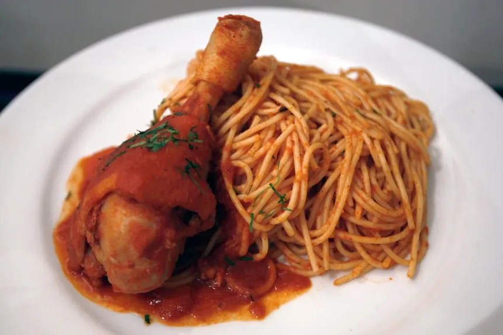

Ingredientes: Fideos, salsa de tomate, piernas de pollo o pechuga, pecho...etc.
Lo primero que vas a hacer es coger una olla grande y la vas a poner agua hasta arriba y le vas poner aceite, y sal.
Lo vas a poner a hervir y una vez que este hirviendo el agua vas a poner los fideos y según el fideos el paquete dice el tiempo que se debe cocinar los fideos.
Mientras se hacen los fideos vas coger el pollo previamente lavado y lo vas a sellar en la sartén, no freír, después en la misma sartén vas poner cebolla picada en cuadrados pequeños y con un poco de aceite, le pones pimienta, sal, ajo en polvo o ajo en pasta y los vas a sofreír hasta que se dore bien.
Una vez que este bien dorado la cebolla vamos a coger el bote de tomate y los vas poner en la sartén junto también con el pollo y una hoja de laurel.
Una vez puesto lo vas a tapar con una tapa y lo dejas que se cocine un poco a fuego medio bajo aprox 20-25 minutos. Una vez que esta hecha la salsa con los fideos ya hechos lo mezclas todo.